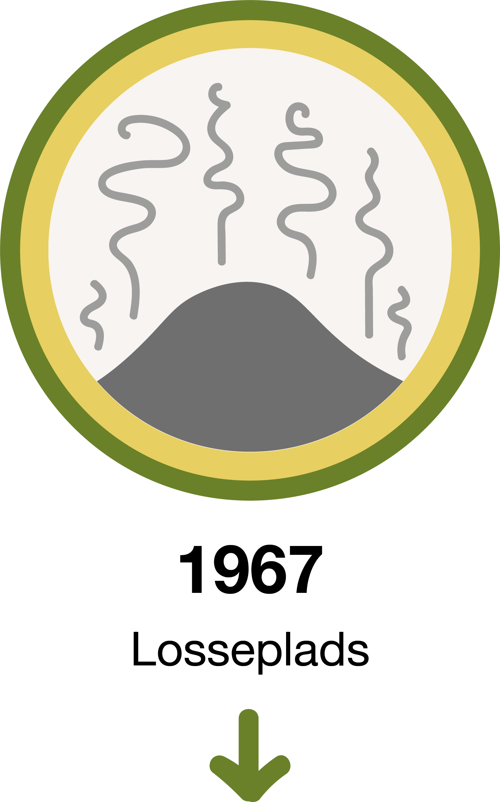

historie
Øens historie
Øen skabes
Stige Ø er et udpræget kulturlandskab. Øen er kunstigt skabt – den første smalle landtange blev dannet af den jord, der blev til overs fra udgravningen af Odense Kanal i 1796-1803.
Stige Ø som udflugtssted
I slutningen af 1800-tallet blev øen et populært udflugtssted til søndagsture. Allerede i 1886 begyndte dampbåden Benedict at sejle på Odense Fjord med anløb på Stige, Klintebjerg, Midskov og Munkebo. Om sommeren kunne man også tage med en særlig sommerfærge med mere nordligt anløbssted. Man kunne komme ud til øen via en træbro, men bådfarten var den mest populære transportform.
De første sortehuse
Betragter du sydkysten af Stige Ø Nord, får du øje på ca. 30 små hjemmebyggede huse. De har haft flere navne gennem tiden, bl.a. Skyttehusene, Skydehusene og Sorte Huse – men deres mest udbredte navn i dag er Sorthusene. De bruges som fritidskoloni for en blandet gruppe af fiskere, jægere og forhenværende værftsarbejdere fra Lindø. Stedet ejes af Odense Havnevæsen, som lejer husene ud til Odense Strandjagtforening. Husene er bygget af træ, tjærepap og andre genbrugsmaterialer. Det første hus blev opført først i 1900-tallet og klyngen voksede siden støt. I begyndelsen af 1960'erne var antallet af huse nået op på 63. Selvom byggeriet ikke var godkendt af myndighederne, opkrævede Odense Kommune en symbolsk husleje på 2 kr. pr. hus om året.
Bådbyggeri
På den sydlige del af Stige Ø lå der tidligere et lille bådebyggeri, som fik en renæssance i 1960'erne. Produktionen varede ved til 1967, hvor Bådebyggeriet valgte at opgive sin placering på Stige Ø. I stedet flyttede det til Rudkøbing på Langeland, hvor det tog navneforandring til Bianca Yacht. Da Leth Christensen overtog Stige Ø Bådebyggeri, bestod medarbejderstaben af 3 mand foruden ham selv. Bianca Yacht endte med at være Danmarks største bådebyggeri med ca. 200 ansatte.
Tivoli
I 1938 blev Søpavillonen overtaget af den kendte tivoliejer Bech Daucke (døbt Albert Erastus Hansen). Han fik en god aftale med bådfarten på Odense Kanal, som gjorde det let at komme ud til Stige Ø på de tidspunkter, hvor han arrangerede cirkusforestillinger og anden underholdning på øen. Den 22. oktober 1938 blev Dauckes Tivoli ramt af uheld. På denne dag skulle Daucke modtage en beboelsesvogn med en stor mængde møbler og et bur med fire nye aber fra et tidligere omrejsende tivoli. I begyndelsen gik alt efter planen. Vognen befandt sig på Godsbanegården i Odense og blev her hægtet på en lastbil fra Budcentralen og kørt afsted til Stige Ø. Kort før den nåede frem til Stigefærgen, drejede chaufføren imidlertid kraftigt for at undgå en fortøjningspæl. Herved kom beboelsesvognen ud i rabatten, rev sig løs fra lastbilen og slog en kolbøtte ned i kanalen. Chaufføren skyndte sig hen til en robåd, sejlede ud og forsøgte at redde aberne, men uden held. Vognen stod helt under vand og alle aber druknede.
Skallegravning
Skallegravningen begyndte allerede i 1908, men blev først for alvor udviklet i mellemkrigstiden. Indtil midten af 1930rne blev muslingeskallerne indvundet ved, at man sejlede ud i en båd, gravede dem op ved håndkraft og smed dem i båden, hvorefter de blev sejlet ind til land, tørret og hældt i sække, som så blev solgt. Da skallerne som regel skulle blandes i hønsefoder, blev de kaldt for "hønseskaller". Parret Gunnar og Gerda Jensen i Sorthusene levede af Gunnars skallegravning. En anden beboer, Kaj Munkebo, kendt som "Den Gamle", fortalte i 1982, at arbejdet tog så meget af Gunnars tid, at da han skulle giftes med Gerda, kunne han kun lige akkurat nå at tage fri en eftermiddag, så han kunne nå ind på rådhuset. Derefter tog han straks tilbage til Stige Ø og fortsatte med at grave skaller. Det vides ikke, om denne historie er sand – men under alle omstændigheder er den god.

Losseplads
Det er ikke sikkert, at du tænker over det, når du bevæger dig rundt i det idylliske landskab på Stige Ø, men bakkerne er dannet af affald, der fra 1967 til 1994 blev ophobet i det tidligere lavvandede område øst for øen. Inden 1960'erne havde Odense haft en losseplads i Vollsmose. Med den stigende velstand i dette årti fulgte imidlertid stadig større affaldsmængder og samtidig var der planer om at opføre nye boligblokke i Vollsmose. Den 8. november 1965 vedtog Odense Byråd derfor at flytte lossepladsen til Stige Ø, så snart det var muligt at køre derud med tunge køretøjer.
Sigøjnere på Stige Ø
Den sydligste del af Stige Ø blev aldrig en del af lossepladsen. Tværtimod blev den i 1960'erne beplantet og brugt som parkerings- og campingplads. I 1970 var denne del af øen centrum i en mediesag om syv campingvogne med franske sigøjnere. De havde først slået lejr ved Odense Havn, men politiet henviste dem hurtigt til området syd for lossepladsen. Et par dramatiske avisartikler gav det indtryk, at sigøjnerne var blevet tvunget til at bo på selve lossepladsen. Det fik en anonym aktionsgruppe til at læsse fem sække affald af i haven hos den lokale politikommissær Bech i protest mod behandlingen. Sagen byggede dog på en misforståelse og sigøjnerne vendte tilbage til Stige Ø hver sommer op igennem 1970'erne.
Lossepladsen nedlægges
I 1989-1992 lod Friluftsrådet en arbejdsgruppe skrive et detaljeret forslag til, hvordan området omkring Odense Fjord kunne udvikles. Gruppens færdige helhedsplan kom bl.a. til at rumme en række forslag til, hvordan man kunne ændre Stige Ø fra en losseplads til et rekreativt bakketerræn. Her skulle der udlejes robåde og kanoer og laves primitive overnatningspladser – ligesom ved Susåen og Gudenåen. Samtidig skulle der etableres et sammenhængende stinet, cykel- og gangstier, informationstavler, borde og bænke. På mange måder kom den senere udformning af øen til at svare til disse anbefalinger. I perioden frem til 1997 blev Stige Ø dækket med mindst 1 meter ler og muld. Magistratens 5. afdeling i Odense forventede, at der ville gå 10-15 år, før området blev rart at færdes i, da stedet var forholdsvist dårligt for træer og planter. Tidsmæssigt kom disse forventninger til at holde stik, men ambitionsniveauet for øen steg væsentligt i slutningen af 1990'erne.
Stige Ø i dag
Fra midten af 1990'erne og et årti frem har der været en livlig offentlig debat om, hvordan man bedst kunne bruge Stige Ø. Til de mere alternative forslag hører et fra billedkunstneren Steffan Herrik, som i 2006 udtalte, at kunstværker i det offentlige rum på Fyn burde kvalitetsvurderes hvert 30. år – og hvis fagfolk vurderede, at de ikke var langtidsholdbare, skulle de pilles ned og ende på en særlig losseplads for dårlig kunst på Stige Ø. Samme år kunne Fyens Stiftstidendes Ivar Juel Nordentoft i øvrigt bringe en opsigtsvækkende bagsideartikel om den hidtil ukendte forening UABPUØIFS (Udbredelse Af Boldspil På Ubeboede Øer I Fyns Stift). Dens angivelige formand/regerende mester i fodgolf Cut Sparkesen gik efter sigende varmt ind for at afskære Stige Ø fra Fyn vha. en ny kanal, hvorefter Sorthusene kunne nedlægges, beboerne drives væk og hele øen udlægges til boldspil i fremtiden.